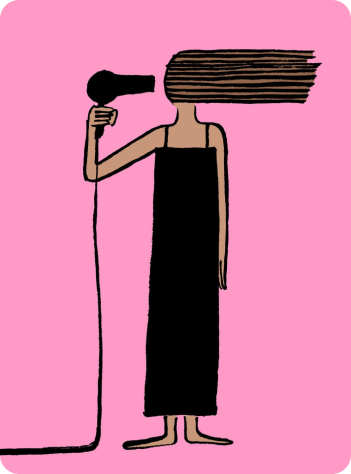
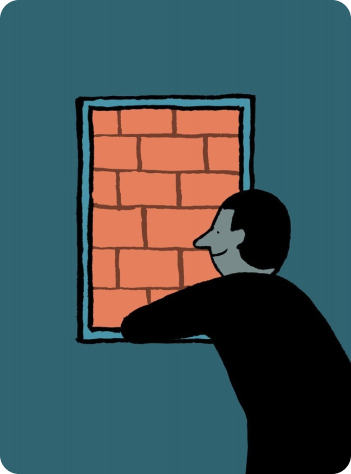
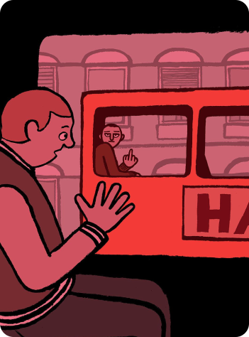
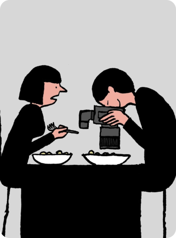
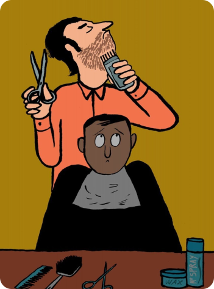
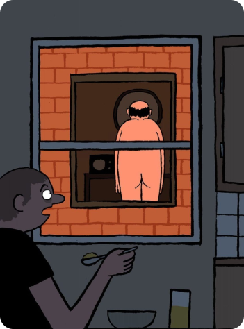

Jean Jullien
Where to start with Jean? He's the widely-adored French illustrator whose incredible popularity stems from his obsession, with interpreting the world around him.
From worldwide political commentary to doodling on windows, walls, tables and objects around him, Jean's work is instantly recognisable, inimitable and holds a purity that only truly can be borne from true passion for his craft.
Accompanying Jean's effortless, humorous style, is his incredible dedication. He juggles countless commissions, exhibitions and mediums simultaneously, driven by an undiminished need to communicate.
OPERE





